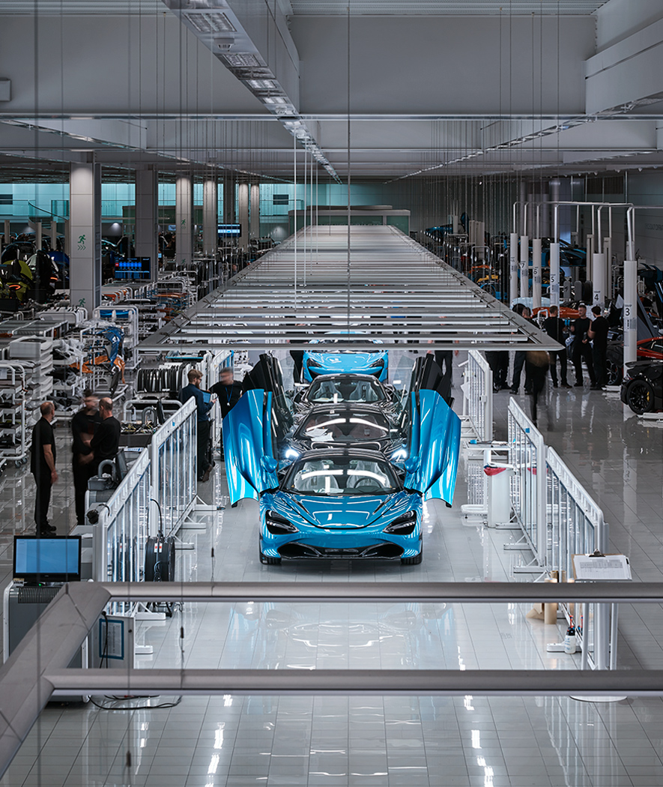
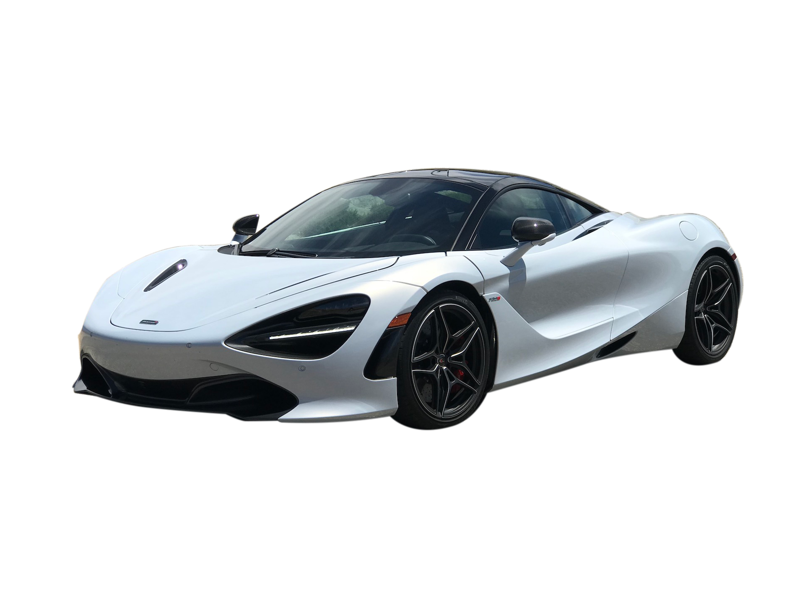
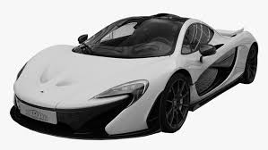
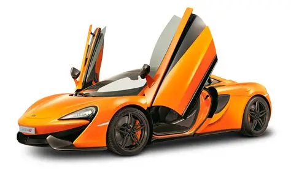

A McLaren é uma fabricante britânica de carros esportivos de alto desempenho fundada em 1963 por Bruce McLaren. Reconhecida por sua inovação e desempenho nas pistas, a marca combina tecnologia de Fórmula 1 com veículos de rua.
História
Exclusividade
Cada McLaren é fabricado em pequena escala, permitindo personalizações avançadas e garantindo exclusividade a cada modelo produzido.
Tecnologia
A McLaren aplica tecnologia avançada em seus carros, incluindo chassis de fibra de carbono, motores V8 e sistemas aerodinâmicos ativos, herdando inovações diretamente da Fórmula 1.

Modelos Mais Vendidos
McLaren 720S
Um dos modelos mais populares da McLaren, o 720S combina design futurista com motor V8 biturbo e tecnologia de ponta.

McLaren P1
O P1 é um superesportivo híbrido da McLaren, combinando motor V8 com motor elétrico para desempenho extremo e eficiência.

McLaren Artura
O Artura é o primeiro híbrido leve da McLaren, com motor V6 biturbo combinado com motor elétrico, mantendo o DNA de esportividade da marca.
